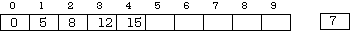
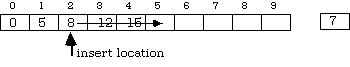
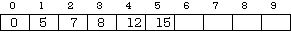

The sorting methods in this section work in a different manner from those described in section 13.2. Rather than compare adjacent items, or search for the largest one in some range, they operate on the premise that some portion of the array is already sorted, and some additional item must be inserted into the correct place in that portion. The methods of finding the proper place for an item therefore become important in this discussion. The intention of this section is to push the ideas of finding and inserting to their limits, analyze them fully, and explore every possible avenue for clever improvements. Some of the resulting code may seem to the reader to be too complex to be worth the trouble, and if so, invitations are extended in the exercises at the end of the chapter to check on the actual performance of the code produced.
To start with, consider the problem of sorting data into an array as it arrives from some source (the source could be another part of the same array, but this is not important at the moment.) At any given step, the portion of the array into which the data is being placed is already sorted, and it is necessary to find the correct place for the new item and put it there. If the existing array is sorted from lowest to highest, it is necessary to find the first position in the array with a value greater than that of the item being inserted. If there are none, the correct position is after the last item being examined. The new item will go at this place, so it is necessary to move everything from that index and beyond to the next greater index position and then copy the new value into its correct spot.
Suppose that at some point in the process the array contained:
A [0] = 0, A [1] =5, A [2] = 8, A [3] = 12, A [4] = 15

and 7 is the value of the new item to be inserted. The suggested algorithm searches through the items A [0 .. i] until it finds the first one with a value greater than 7 (which in this case is the value 8). The index of that item ([2]) is the place to put the new item. First, though, A [4], A [3], and A [2] must be moved along to the next higher indexed position, and in that order. Do you see why?

When these steps are complete, the array looks like this:

If the number 17 were now to be inserted, an examination of the items already active would reveal that all were less than the new one, so it would go in the last array position (six) and no moves would have to be made.
This informal examination of the situation then leads to a more formal expression of the problem and its solution:
To sort a cardinal new value into an existing array [0 .. n].
Sort To Array
Find Position
set pos to 0
while (pos < number in use) and (array item [pos] <= new value)
increment pos
end while
Make Room
if pos < number in use then
for counter = last position used to pos by -1
set array item [counter + 1] to array item [counter]
end for
end if
Insert New Item
set array item [pos] to value
The insertion procedure requires a variable parameter to hold the array being altered and a value parameter to pass it the new number to insert. It also requires the index of the highest assigned element, so that it can both stop at the right place when doing comparisons, and start at the right one when doing moves. Because it is important to test such code carefully, the insert procedure has been enclosed in a module that serves as a test harness.
MODULE TestInsert;
(* By R. Sutcliffe Last Modified 1995 04 19 *)
FROM STextIO IMPORT
WriteLn ;
FROM SWholeIO IMPORT
WriteCard;
PROCEDURE Insert (item : CARDINAL; (* # to insert *)
VAR source : ARRAY OF CARDINAL; (* array to put it in *)
lBound, (* position from zero to start using places *)
uBound : CARDINAL (* position from zero of last useable place *) );
(* inserts the item in the sorted array from internal position lBound to uBound
Pre: the actual array sorted for the first uBound-1 positions and is large enough to insert an item and do whatever moves are required
Post: the item is inserted at the first position where the old array item is greater, or at internal position uBound if it is larger than them all Then, items from the insert position through to position uBound-1 are moved along along by one *)
VAR
pos, (* will contain where to put it *)
count : CARDINAL; (* loop counter *)
BEGIN
(* Find Position *)
pos := lBound;
WHILE (pos < uBound) AND (source [pos] <= item )
DO
INC (pos)
END; (* while *)
(* Make Room *)
IF pos < uBound (* otherwise goes at the end; no moves needed *)
THEN (* this loop also skipped if howMany is zero *)
FOR count := uBound - 1 TO pos BY -1 (* start at top end *)
DO
source [count + 1] := source [count];
END; (* for *)
END; (* if *)
(* Insert New Item *)
source [pos] := item;
END Insert;
PROCEDURE PrintIt (theArray : ARRAY OF CARDINAL; numToPrint : CARDINAL); (* print the whole array *)
VAR
count : CARDINAL;
BEGIN
FOR count := 0 TO numToPrint - 1
DO
WriteCard (theArray [count], 5);
END;
WriteLn;
END PrintIt;
VAR (* for main program *)
theStuff : ARRAY [1 .. 10] OF CARDINAL;
BEGIN
theStuff [1] := 34; theStuff [2] := 37; theStuff [3] := 44;
theStuff [4] := 134; theStuff [5] := 744; theStuff [6] := 824;
theStuff [7] := 937; theStuff [8] := 984; theStuff [9] := 1039;
PrintIt (theStuff, 9); (* the original *)
Insert (5, theStuff, 0, 0); (* kills first item; no moves *)
PrintIt (theStuff, 9);
Insert (3500, theStuff, 7, 9); (* appends new item at the end *)
PrintIt (theStuff, 10); (* so print one more to see it *)
Insert (0, theStuff, 0, 1); (* insert before first, move one *)
PrintIt (theStuff, 10);
Insert (400, theStuff, 0, 9); (* find place in overall list *)
PrintIt (theStuff, 10);
Insert (7, theStuff, 0, 1); (* in after first, none moved *)
PrintIt (theStuff, 10);
END TestInsert.
34 37 44 134 744 824 937 984 1039
5 37 44 134 744 824 937 984 1039
5 37 44 134 744 824 937 984 1039 3500
0 5 44 134 744 824 937 984 1039 3500
0 5 44 134 400 744 824 937 984 1039
0 7 44 134 400 744 824 937 984 1039
Observe that this procedure can be used even to insert the first item in the array, because if it starts with no active items, then the value of lastPosNum is zero and neither loop is entered, so the only statement that would be executed is source [pos] := item with pos equalling zero, which is exactly what is desired.
It should also be clear by now that the searching method presented in the above code is not the most efficient, for it is linear, requiring the examination of each element in turn until the correct location is discovered. The insert procedure can be re-cast so that it too uses the more efficient binary search discussed in the last section.
PROCEDURE InsertB (item : CARDINAL; (* # to insert *)
VAR source : ARRAY OF CARDINAL;(* array to put it in *)
lBound, (* position from zero to start using places *)
uBound : CARDINAL (* position from zero of last useable place *) );
(* inserts the item in the sorted array from internal position lBound to uBound
Pre: the actual array sorted for the first uBound-1 positions and is large enough to insert an item and do whatever moves are required
Post: the item is inserted at the first position where the old array item is greater, or at internal position uBound if it is larger than them all Then, items from the insert position through to position uBound-1 are moved along along by one *)
VAR
pos, (* will contain where to put it *)
count : CARDINAL; (* loop counter *)
bottom, top : CARDINAL;
BEGIN
(* Find Position *)
bottom := lBound;
IF uBound # lBound
THEN (* else using only one item & also must avoid negatives *)
top := uBound - 1;
WHILE (bottom < top)
DO
pos := (top + bottom + 1) DIV 2;
IF item < source [pos]
THEN (* ignore top half *)
top := pos - 1;
ELSE
bottom := pos (* ignore bottom half *)
END; (* if *)
END (* while *);
END;
pos := bottom;
(* the insert position is just before, or just after this position and one comparison has yet to be made *)
IF (item >= source [pos]) AND (pos < uBound)
THEN (* goes after *)
INC (pos);
END; (* if *)
(* Make Room *)
IF pos < uBound (* otherwise it goes at the end; no moves needed *)
THEN (* this loop also skipped if uBound is zero *)
FOR count := uBound - 1 TO pos BY -1 (* start at high end *)
DO
source [count + 1] := source [count];
END; (* for *)
END; (* if *)
(* Insert New Item *)
source [pos] := item;
END InsertB;
This code has the advantage of being much faster at execution time; it has the disadvantage of requiring somewhat more work to plan, write, and debug. Notice the differences between this and the earlier binary find routine. Here, the concern is to locate the position to do the insert. There may already be items in the array with the same value as the one being inserted. If so, this routine places the new item after the last of these. When run as an enclosure to the same program as used to test the previous insert routine, the results were identical.
Note that, as before, the procedure Strings.Compare, or an equivalent user-written one, could be used in conjunction with the ideas presented in this section to input and sort, say, a teacher's class list by last name. However, since fewer than a hundred students would likely fall to a single teacher for marking in a given class, it is possible that a linear search and insert would be adequate.
So far, all that has accomplished is the insertion of single items into an already sorted array. While this is a little more than just finding out if it was already there, it is short of the goal of arriving at that sorted condition in the first place--or is it?
In fact, the insert method can be used to sort an array that starts out initially in random order. The sort is planned like this:
1. Assume that the first element of the source array constitutes a sorted list. This list one has one thing in it, so it is sorted in a trivial sense.
2. Start with the next unsorted item source [count] (initially count would equal one.)
3. Use the procedure above to insert this next item into the sorted part of the array (which ends at the position count - 1) at the correct point.
4. The sorted portion of the array now has two items. Repeat the above process with a sorted part that grows by one item at each step until the sorted section is the entire array.
Here is what the procedure to sort the array would then look like:
PROCEDURE InsertSort (VAR source : ARRAY OF CARDINAL; lBound, uBound : CARDINAL);
VAR
count : CARDINAL;
BEGIN
FOR count := lBound TO uBound
(* count on indices from second to last for insertions *)
DO
InsertB (source [count], source, lBound, count);
END;
END InsertSort;
This sort was tested with a similar test harness to that in the previous module and the data:
theStuff [1] := 113; theStuff [2] := 77; theStuff [3] := 0; theStuff [4] := 50; theStuff [5] := 113; theStuff [6] := 114; theStuff [7] := 900; theStuff [8] := 113; theStuff [9] := 15; theStuff [10] := 300; theStuff [11] := 13; theStuff [12] := 135; theStuff [13] := 1;
The procedure was invoked by:
theSort (theStuff,0,13)
was made, and a line
PrintIt (theStuff,13); WriteLn;
was placed on the last line of the FOR loop in the procedure InsertSort to follow the progress. The output is given below with the portion of the list that is sorted (within itself) underlined. The identical output was obtained using Insert in InsertSort rather than InsertB.
113 77 0 50 113 114 900 113 15 300 13 135 1
77 113 0 50 113 114 900 113 15 300 13 135 1
0 77 113 50 113 114 900 113 15 300 13 135 1
0 50 77 113 113 114 900 113 15 300 13 135 1
0 50 77 113 113 114 900 113 15 300 13 135 1
0 50 77 113 113 114 900 113 15 300 13 135 1
0 50 77 113 113 114 900 113 15 300 13 135 1
0 50 77 113 113 113 114 900 15 300 13 135 1
0 15 50 77 113 113 113 114 900 300 13 135 1
0 15 50 77 113 113 113 114 300 900 13 135 1
0 13 15 50 77 113 113 113 114 300 900 135 1
0 13 15 50 77 113 113 113 114 135 300 900 1
0 1 13 15 50 77 113 113 113 114 135 300 900
If one wished instead to do the entire job in a single procedure, (cutting down on the overhead of procedure calls,) the plan could be modified as follows:
1. Assign the value of the item to be sorted to a temporary variable temp. Its current position in the array is now expendible.
2. Proceed through the sorted part of list, comparing temp to the current item at each step. (This is linear.)
3. As this is done, move items that are greater than temp one position closer to the high index item, filling the space made available at the last step.
4. Stop when the correct position for temp is reached.
5. Put temp in this position.
6. Continue on to the next index ( the next unsorted item).
7. Repeat until the last indexed item is processed.
Here is the code for this version:
PROCEDURE InsertSort (VAR source : ARRAY OF CARDINAL; lBound, uBound : CARDINAL);
VAR
count, moveCount, temp : CARDINAL;
BEGIN
IF uBound -->> lBound
THEN
FOR count := lBound TO uBound
DO
temp := source [count]; (* set aside unsorted one *)
moveCount := count; (* start new counter there *)
WHILE (moveCount -->> lBound) AND (source [moveCount - 1] -->> temp)
DO
source [moveCount] := source [moveCount - 1];
(* move along to make room *)
DEC (moveCount); (* count back through sorted part *)
END; (* while *)
source [moveCount] := temp; (* do insert *)
END; (* for *)
END;
END InsertSort;
The count went backwards from higher indices in doing comparisons, starting each time just below the point at which resided the next item to insert. The auxiliary variable temp was necessary, because the first position to be copied over will always be that of the one being inserted. This insert sort, while it is simpler to code, takes longer to find the correct position at which to insert something than one based on a binary search, and it makes just as many actual moves in the array as does the previous two-procedure version. The two-procedure version is also modularized, and may be easier to follow, because the searching and the sorting are compartmentalized into two program units instead of being intermingled.
Despite the improvements in searching, however, the insert sort is still O(n2). This is because the potential number of moves is O(n2) even though the searching has become more efficient.
There are a variety of techniques that can improve on the efficiency of the inserting method of sorting. Most of these are based on the observation that if items that are farther apart in the original array (rather than next to each other) are interchanged to achieve a move, many shorter moves may be saved. This is especially so if interchanges of items far apart are done early in the sorting process, and interchanges of items close together are done later.
One way of doing this is to sort sub-lists of the original items that are initially separated by some fixed amount, call it k. If one used an insert sort with every occurrence of an index step of 1 replaced by a step of k (and count := 1 with count := k + 1), the code would arrange the array elements so that taking every kth element (starting anywhere) produces a sorted list. That is, the sub list at indices 1, 1 + k, 1 + 2k, 1 + 3k ... is sorted, and so is the sub-list at indices 2, 2 + k, 2 + 2k, 2 + 3k, ... and so on up to the sub list at indices k - 1, 2k - 1, 3k - 1, .... There are k of these sub lists.
A list is k-sorted if every sub-list of elements separated by k positions In the original list is sorted.
Another way to look at this technique is to view the array to be sorted as if it were two-dimensional with rows of length k. A k-sort can be thought of as a sort on the columns of this rearrangement. If the number k does not divide the original number of items, not all the columns of the rearrangement will have the same number of items in them.
An array for sorting: 23, 1, 47, 134, 89, 76, 35, 342, 987, 3, 82, 27, 15, 10, 99, 151, 121, 2, 18, 96, 753, 13, 472, 111, 58, 390, 26, 32, 100, 58, 21, 190, 56, 345, 67, 88, 32, 102 The array rearranged for 13-sorting: 23 1 47 134 89 76 35 342 987 3 82 27 15 10 99 151 121 2 18 96 753 13 472 111 58 390 26 32 100 58 21 190 56 345 67 88 32 102 The array 13-sorted: 10 1 47 58 2 18 35 342 13 3 32 27 15 23 32 100 121 21 76 56 345 67 88 82 58 390 26 99 151 134 89 190 96 753 987 472 111 102
Notice that "k-sorted" is the same as "sorted" if and only if k = 1. However, if one k-sorts an array for a large value of k (moving elements long distances first) and then for progressively smaller values of k (where the sort will become easier as fewer moves are required) and finally ending with a one-sort (which is a straight insertion pass), then fewer moves in total need to be made.
A sequence of k-sorts ending in k = 1 is called a Shell sort.
The 13- sorted array arranged for 4-sorting: 10 1 47 58 2 18 35 342 13 3 32 27 15 23 32 100 121 21 76 56 345 67 88 82 58 390 26 99 151 134 89 190 96 753 987 472 111 102 The array also 4-sorted: 2 1 26 27 10 3 32 56 13 18 32 58 15 21 35 82 58 23 47 99 96 67 76 100 111 102 88 190 121 134 89 342 151 390 987 472 345 753
Observe how the smaller items are now clustered toward the beginning, and the larger ones toward the end. An insertion sort (a one-sort) will now have far less work to do to complete the task than if the array had not been 13-sorted and 4-sorted first.
The following table illustrates how a collection of characters is sorted, also using the k-sequence 13, 4, 1. This time, the array has not been written in rows of 13 and in rows of four, so it may be a little more difficult to verify the sort by sight.
# 1 2 3 4 5 6 7 8 9 10 11 12 13 14 15 16 17 18 19 20 21 22 23 24 H E R E A R E S O M E L E T T E R S T O S O R T H E E E A R E S O M E L E T T R R S T O S O R T A E E E E M E L H O E O O R R R R S T S S T T T A E E E E E E H L M O O O R R R R S S S T T T T
The first pass organizes the sub-lists at positions 1 and 14, 2 and 15, 3 and 16, etc. The second organizes the sub-lists at positions 1, 5, 9, 13, 17, and 21; at 2, 6, 10, 14, 18, and 22, and so on. The plain insertion sort conducted at the last step does not have to move any one object very far, so there are fewer reassignments overall.
Various k-sequences have been examined and used for the Shell sort, and, as might be expected, some work better than others. For simplicity, some people generate the k-sequence by starting at lastPosNum DIV 2 and thereafter taking k = k DIV 2.
This is fairly satisfactory if lastPosNum equals, say, 38. Then, the sequence of values for k is 19, 9, 4, 2, and 1. "So what?" one might say. Observe that a list that is 2-sorted is necessarily also 4-sorted as well, for if a sub-sequence of every second item is in order, the sequence of every fourth one certainly is. Some of the comparisons are therefore wasted, because there is no need to do a 4-sort if there is later going to be a 2-sort as well. In the worst case, if the position of the last item in the source array happens to be a power of 2, so will every number in the k-sequence, and the sort will rapidly lose efficiency. In general, if a j-sort is to be conducted at a later stage of a Shell sort, there is no point in doing an n*j-sort for any n at an earlier stage.
To maximize the effectiveness of a Shell sort, it is even better if there are no factors at all common among the numbers used for the values of k in the k-sequence. That is, the terms of the k-sequence should be relatively prime. (The greatest common divisor of any pair should equal one.)
A sequence that works fairly well is the one generated by the formula k(i) = 3 * k(i-1) + 1, namely 1093, 364, 121, 40, 13, 4, 1, although it does certain a subsequence of multiples of 4. The code would now look like this:
PROCEDURE ShellSort1 (VAR source: ARRAY OF CARDINAL; lBound, uBound : CARDINAL);
VAR
k, listCount, count, moveCount, temp : CARDINAL;
BEGIN
k := 1;
REPEAT (* get first "k" in sequence *)
k := 3 * k + 1
UNTIL k -->> uBound - lBound;
REPEAT
k := k DIV 3; (* work backwards on same sequence *)
FOR listCount := lBound TO lBound + k - 1
(* Start as many k-lists as possible. *)
DO
count := listCount + k;
WHILE count <= uBound
DO (* each k-sort starts here *)
temp := source [count]; (* set aside unsorted one *)
moveCount := count;
WHILE (moveCount -->gt;= lBound + k) AND (source [moveCount - k] -->gt; temp)
DO
source [moveCount] := source [moveCount - k];
(* move along to make room *)
DEC (moveCount, k) (* count backward in k-list *)
END;
source [moveCount] := temp; (* insert new item *)
INC (count, k);
END; (* while count *)
END; (* for listCount *)
UNTIL k = 1
END ShellSort1;
There are two additional observations that can be made at this point, some important observations and some further refinements based on these.
First, it is useful to keep the k-sequence on hand instead of generating it with a formula. One must ensure that the sequence runs high enough to sort the largest array, but this method allows for some testing that will enable one to find an optimum k-sequence by trial and error.
Second, the k-sorts in this section were accomplished by a linear search method through each of the k lists. That can be modified to utilize a binary search, even though this is more difficult to write. The key is formulating the search correctly. It is easy to examine only every kth element of a list, but the computation of the middle index takes a little thought. Suppose one has a sequence of indices in the array starting at a0 and separated by k positions. These indices themselves form an arithmetic sequence, a1, a2, a3, a4, ... ai ... whose terms are:
a1, (a1 + k) , (a1 + 2k) , (a1 + 3k) , ... (a1 + (i - 1) k )
Note the formula for the ith term
a1 = (a1 + (i - 1) k)
To get the index of the middle one of these, first note that the number of k's added is
i - 1 = (ai - a1) DIV k, or i = 1 + (ai - a1) DIV k
Half of this number is
m = i DIV 2 = (1 + (ai - a1) DIV k ) DIV 2
The actual term in the sequence of indices when a total of m k's have been added to the first index is:
tm+1 = a1 + mk = a1 + ((1 + (ai - a1) DIV k) DIV 2) k
To illustrate, suppose one was examining the 3-list of terms starting at index 4, that is, the terms t4, t7, t10, t13, t16, t19, t22, .... This list may or may not end at an index that can be expressed in the form 4 + 3j. Looking at the sequence of indices 4, 7, 10, 13, 16, 19, 22, ... and various ending points, the above formula gives for the middle index:
top index middle 22 13 16 10 21 13
all of which are satisfactory. In the event that k = 1 (the last k-sort done,) the formula above simplifies to:
tm+1 = a1 + ((1 + (ai + a1) DIV 1) DIV 2) 1
or
tm+1 = a1 + 1 + (ai - a1) DIV 2 = a1 + (1 + (ai - a1)) DIV 2
so that
2tm+1 = 2a1 + 1 + ai + a1
or
tm+1 = (a1 + ai + 1) DIV 2
which gives the same result as (a1 + ai) DIV 2 for an odd number of terms. If there are an even number of terms, there is no true middle, and either of two terms can be selected with equal effectiveness. (a1 + ai + 1) DIV 2 gives the one of these two with the higher index, and (a1 + ai) DIV 2 gives the one with the lower. Since the latter also has one less calculation, using it will save time.
With suitable changes in notation, these formulas can be used in the find portion of the sorting routine.
With these points in mind, here is another version of the Shell sort. This one conducts the binary search in a slightly different manner than did previous versions.
VAR
kSeq : ARRAY [1 .. 10] OF CARDINAL;
(* Permits use of a predefined sequence for k-step values. *)
PROCEDURE NewPos (low, high, step : CARDINAL) : CARDINAL;
BEGIN
IF step = 1
THEN
RETURN (low + high + 1) DIV 2
ELSIF high = low THEN
RETURN high
ELSE
RETURN low + ((1 + (high - low) DIV step) DIV 2) * step
(* calculate "middle position" as described above *)
END;
END NewPos;
PROCEDURE KFindB (item : CARDINAL;
VAR source : ARRAY OF CARDINAL;
first, last, kStep : CARDINAL) : CARDINAL;
(* This procedure is a modification of the earlier binary search. It searches through a sub list of the supplied array considering as consecutive those positions separated by "kStep" using a binary method and returning the index at which the new item must be inserted. *)
VAR
bottom, top, pos : CARDINAL;
BEGIN
bottom := first;
top := last;
IF kStep = 1
THEN
DEC (top)
END;
WHILE (bottom < top)
DO
pos := NewPos (bottom, top, kStep);
IF item < source [pos]
THEN (* discard top half *)
top := pos - kStep;
ELSE
bottom := pos (* discard bottom half *)
END; (* if *)
END; (* while *)
pos := bottom;
(* the insert position is just before, or just after this position and one comparison has yet to be made *)
IF (item -->>= source [pos]) AND (pos < last)
THEN (* goes after *)
RETURN (pos + kStep);
ELSE
RETURN (pos)
END; (* if *)
END KFindB;
PROCEDURE KInsert (VAR source: ARRAY OF CARDINAL;
toIndex, fromIndex, kStep : CARDINAL);
(* This procedure takes source [fromIndex] and inserts it at source [atIndex] moving things along in kStep increments to fill the gap. *)
VAR
temp, count : CARDINAL;
swap : BOOLEAN;
BEGIN
temp := source [fromIndex];
count := fromIndex;
WHILE count -->>= (toIndex + kStep)
DO
source [count] := source [count - kStep];
DEC (count, kStep)
END;
source [toIndex] := temp; (* actual insert *)
END KInsert;
(* finally, here is the actual sort procedure that the outside world uses *)
PROCEDURE ShellSort (VAR source: ARRAY OF CARDINAL;
lBound, uBound : CARDINAL);
VAR
kIndex, k, listCount, count, putIndex, temp : CARDINAL;
(* compute an appropriate value of k from the sequence initialized below *)
BEGIN
kIndex := 0;
REPEAT
INC (kIndex)
UNTIL kSeq [kIndex] -->> (uBound DIV 2);
REPEAT
DEC (kIndex);
k := kSeq [kIndex];
FOR listCount := lBound TO lBound + k - 1
(* Start as many k-lists as possible. *)
DO
count := listCount + k;
WHILE count <= uBound
DO (* each k-sort starts here *)
putIndex := KFindB (source [count], source, listCount, count, k);
IF putIndex # count
THEN
KInsert (source, putIndex, count, k);
END;
INC (count, k)
END; (* while count *)
END (* for listCount *)
UNTIL kIndex = 1
END ShellSort;
This was encapsulated in a library module, with the following initialization of the k-sequence values:
BEGIN (* initialization section *) kSeq [1] := 1; kSeq [2] := 4; kSeq [3] := 11; kSeq [4] := 23; kSeq [5] := 53; kSeq [6] := 111; kSeq [7] := 223; kSeq [8] := 451; kSeq [9] := 1003; kSeq [10] := 2029; END Sort.
and the following modified version of PrintIt:
PROCEDURE PrintIt (theArray : ARRAY OF CARDINAL; numToPrint, numPerLine, flen : CARDINAL);
VAR
count : CARDINAL;
BEGIN
FOR count := 0 TO numToPrint - 1
DO
WriteCard (theArray [count], flen);
IF (count + 1) MOD numPerLine = 0
THEN
WriteLn;
END;
END;
END PrintIt;
A simple test harness to check the library module follows:
MODULE TestShellSort; (* By R. Sutcliffe To illustrate shell sorting last modified 1995 05 02 *) FROM STextIO IMPORT WriteChar, WriteString, WriteLn; FROM Sorts IMPORT PrintIt, ShellSort; VAR theStuff : ARRAY [1 .. 13] OF CARDINAL; BEGIN theStuff [1] := 113; theStuff [2] := 77; theStuff [3] := 0; theStuff [4] := 50; theStuff [5] := 113; theStuff [6] := 114; theStuff [7] := 900; theStuff [8] := 113; theStuff [9] := 15; theStuff [10] := 300; theStuff [11] := 13; theStuff [12] := 135; theStuff [13] := 1; PrintIt (theStuff,13,13,5); WriteLn; ShellSort (theStuff,2,2); (* sort one; does nothing *) PrintIt (theStuff,13,13,5); WriteLn; ShellSort (theStuff,1,2); (* sort two *) PrintIt (theStuff,13,13,5); WriteLn; ShellSort (theStuff,2,9); (* all but first two, last three *) PrintIt (theStuff,13,13,5); WriteLn; ShellSort (theStuff,0,12); (* whole thing *) PrintIt (theStuff,13,13,5); WriteLn; END TestShellSort.
This produced the following output:
113 77 0 50 113 114 900 113 15 300 13 135 1
113 77 0 50 113 114 900 113 15 300 13 135 1
113 0 77 50 113 114 900 113 15 300 13 135 1
113 0 15 50 77 113 113 114 300 900 13 135 1
0 1 13 15 50 77 113 113 113 114 135 300 900
At this point, the reader should at least be suspicious that the extensive modifications to the routine to achieve a binary search on the k-sequences may not be worth the trouble. Indeed, they may introduce so much arithmetic that they actually degrade the performance of the sort. Whether this is so, and to what extent, has been left to the exercises.
The performance of a Shell sort in comparison with the other simple sorts is difficult to analyze. It depends on the k-sequence employed, and no general solution to the problem of finding the optimum k-sequence, or analyzing performance for a given k-sequence is known. For the k-sequence 1, 4, 13, 40, 121, ... a Shell sort never does more than N3/2 comparisons, and this limit also holds for other k-sequences. One conjecture is that a Shell sort is O(n (log2n)2) Various sequences can be tested by having them stored in a separate file, and making the Shell sort obtain them from there. The one employed above was obtained with a little trial and error and found to be reasonably effective. Some of the literature on the Shell sort indicates that starting with the number of items and dividing by a shrink factor of about 1.7 for the first and each subsequent pass produces optimum results in most cases. For instance, if there were 100 items in the array to be sorted, k would first be initialized to 100, and using
k := TRUNC (FLOAT (k) / 1.7);
or, better yet (to avoid floating point operations)
k := 10 * k / 17
thereafter, at the beginning of the sorting loop, the following k-sequence (in order of use) is obtained:
58, 34, 20, 12, 7, 4, 2, 1.
However, in view of the comments above, there are clearly inefficiencies in this sequence, and some further fine tuning perhaps ought to be done. Again, the student is invited to experiment.
The Shell sort rearranges all the k-lists that it can form with a given k. Another approach to the comparison of elements that are relatively far apart in the list is to sort only the k-list starting at position zero for each k. One might immediately suspect that this approach would require somewhat more steps in the sequence for optimum performance, and this turns out to be the case.
A sequence of sorts of only the k-lists starting at position zero for k decreasing by a constant factor is called a comb sort.
The comb sort was first published by Richard Box and Stephen Lacey in the April 1991 issue of Byte magazine. They found that using a sequence for the gaps that decreased by a shrink factor of 1.3 gave the best results. Trial and error produced the refinement that an eventual gap size of 11, (rather than 9 or 10) gave a more efficient sequence of gaps below that point. Their published sort was based on a modification of a bubble sort routine; here it is presented using an insert technique:
PROCEDURE CombSort (VAR source: ARRAY OF CARDINAL; lBound, uBound : CARDINAL);
VAR
gap, count, moveCount, temp : CARDINAL;
BEGIN
gap := uBound - lBound;
IF gap = 0 (* check hostile cases outside loop *)
(* note: can't hit zero any other way *)
THEN
RETURN (* nothing to sort *)
ELSIF gap = 1 THEN (* special case sorting two *)
IF source [lBound] -->> source [uBound]
THEN
Swap (source [lBound], source [uBound])
END; (* if source *)
RETURN (* in either case *)
END; (* if gap *)
REPEAT
gap := gap * 10 / 13;
IF (gap = 9) OR (gap = 10)
THEN
gap := 11
END;
count := lBound + gap;
WHILE count <= uBound
DO
temp := source [count]; (* set aside unsorted one *)
moveCount := count;
WHILE (moveCount -->>= gap) AND (source [moveCount - gap] -->> temp)
DO
source [moveCount] := source [moveCount - gap];
(* move along to make room *)
DEC (moveCount, gap) (* count backward in list *)
END;
source [moveCount] := temp; (* insert new item *)
INC (count, gap);
END; (* while count *)
UNTIL gap = 1
END CombSort;
The difference between operation of the Shell sort and the comb sort can be illustrated by examining the following table, constructed from successive passes of the two sorts with the array printed out at each pass. The underlined items are the ones compared and sorted.
The Combsort Position 0 1 2 3 4 5 6 7 8 9 10 11 Initial 234 77 0 113 404 94 900 113 15 300 13 135 gap=11: 135 77 0 113 404 94 900 113 15 300 13 234 gap= 8: 15 77 0 113 404 94 900 113 135 300 13 234 gap= 6: 15 77 0 113 404 94 900 113 135 300 13 234 gap= 4: 15 77 0 113 135 94 900 113 404 300 13 234 gap= 3: 15 77 0 113 135 94 300 113 404 900 13 234 gap= 2: 0 77 13 113 15 94 135 113 300 900 404 234 gap= 1: 0 13 15 77 94 113 113 135 234 300 404 900 The Shell sort Position 0 1 2 3 4 5 6 7 8 9 10 11 Initial 234 77 0 113 404 94 900 113 15 300 13 135 k = 4: 15 77 0 113 234 94 900 113 404 300 13 135 k = 4: 15 77 0 113 234 94 900 113 404 300 13 135 k = 4: 15 77 0 113 234 94 13 113 404 300 900 135 k = 4: 15 77 0 113 234 94 13 113 404 300 900 135 k = 1: 0 13 15 77 94 113 113 135 234 300 404 900
The Shell sort makes more sub-lists and does more comparisons in each one, while the comb sort makes more passes, but only constructs a single sub-list at each pass. Box and Lacey claim that their comb sort achieved the best balance of the two between short times and predictability, as it sorts random lists and previously sorted lists with about the same efficiency. They also claim that actual trials show the comb sort to approximate O(n log2n) as n gets large.